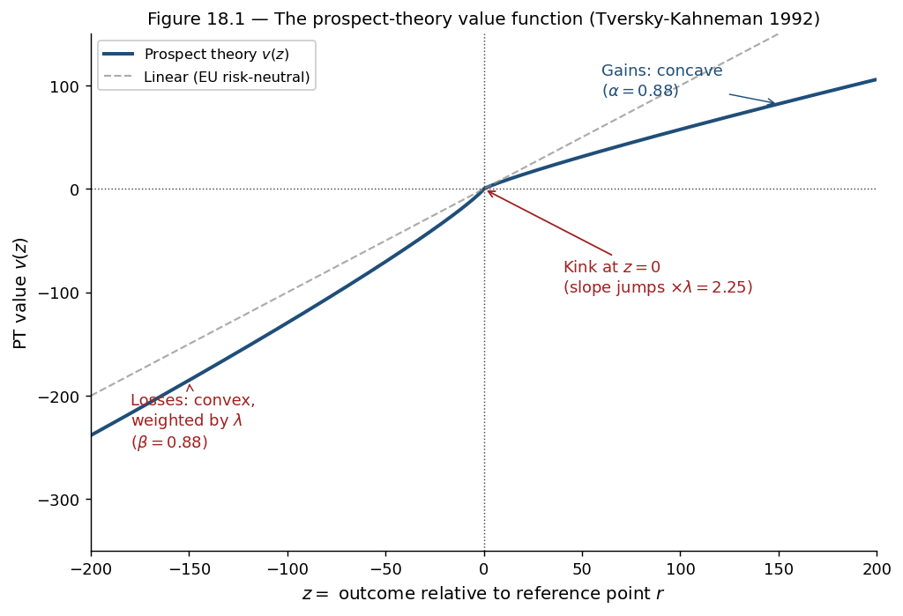
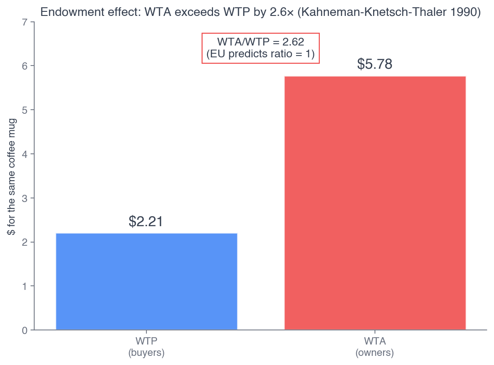
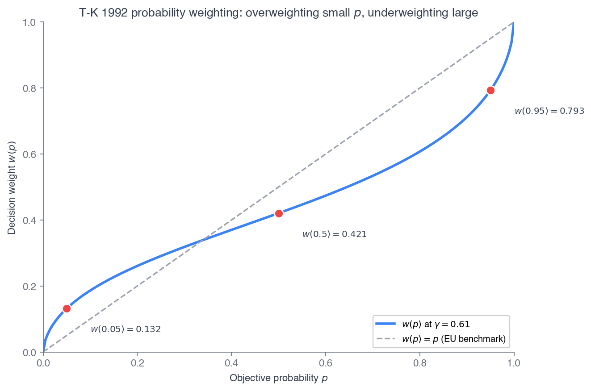
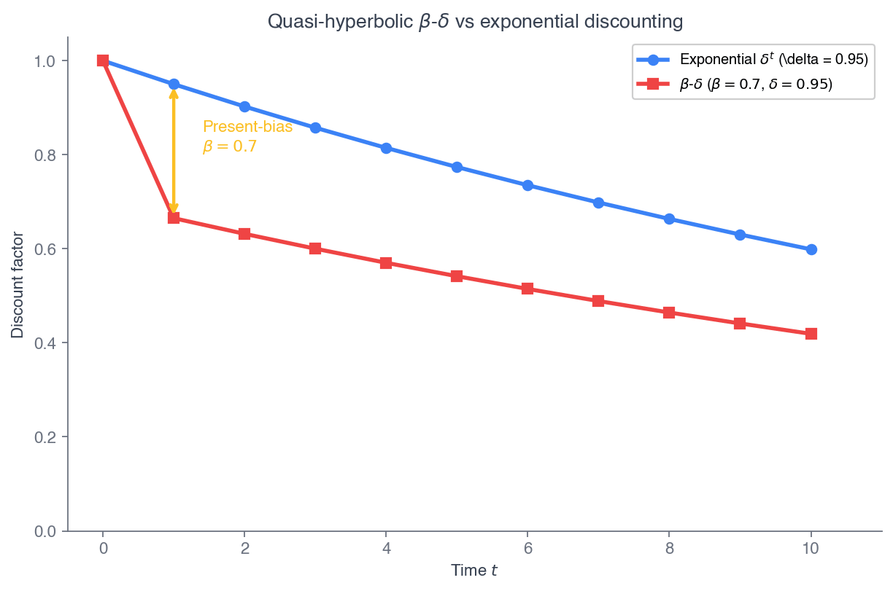
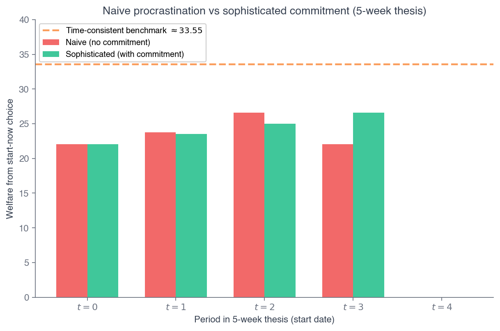
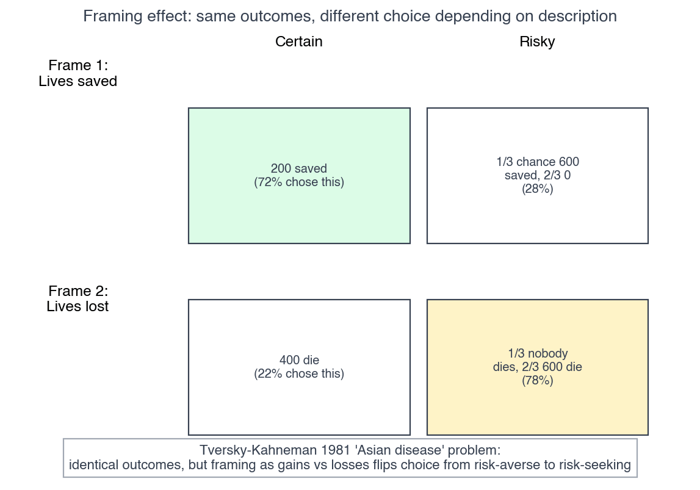
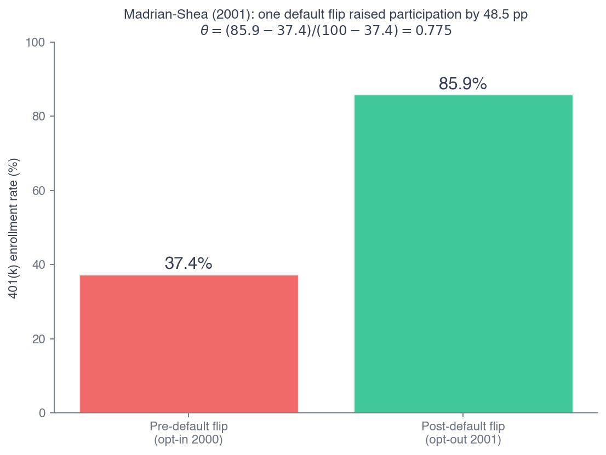
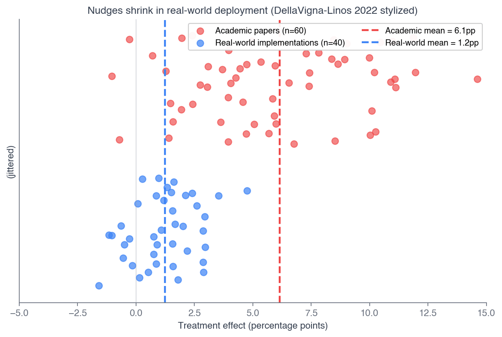

Click anywhere (or press Esc) to close
ECON 2316 • Microeconomic Theory • Chapter 18
For 14 chapters the agent was a flawless optimizer. Today the failure moves inside the agent — loss aversion, present bias, mental accounting, and the default that moved half a workforce.
Dr. Richeng Piao
Department of Economics
Northeastern University — 100 min • Closes Part V
By the end of class today, you will be able to…
1
Distinguish prospect theory's reference-dependent value function from expected utility's absolute-wealth Bernoulli utility. (Bloom L4)
2
Use the loss-aversion coefficient \(\lambda\), curvature \(\alpha,\beta\), and probability-weighting \(\gamma\) to evaluate gambles. (Bloom L4)
3
Compute \(\beta\)-\(\delta\) quasi-hyperbolic present values and identify dynamic inconsistency. (Bloom L4)
4
Distinguish naive vs sophisticated present bias, and explain why only the sophisticated demand commitment devices. (Bloom L5)
5
Apply the default-effect decomposition \(\theta\) to retirement-savings (Madrian–Shea) and organ-donation data. (Bloom L4)
6
Evaluate behavioral interventions critically using the DellaVigna–Linos publication-bias framework. (Bloom L5)
Chapter 15 — the benchmark
Chapter 18 — the delivery
Part V is four ways the welfare theorem breaks. Risk (Ch 15), information asymmetry (Ch 16), externalities and public goods (Ch 17) — and now the cognitive limits of the agents who populate every model in the book. Behavioral economics gives us a vocabulary for the deviations the rational-choice model cannot rationalize.
1998: a Fortune 500 firm flips its 401(k) from opt-in (fill a form to enroll) to opt-out (auto-enrolled at 3%, fill a form to leave). Same dollars, same friction, same complete freedom to choose either path.
Madrian–Shea (2001 QJE) report the result at 3–15 months tenure: participation jumped from 37.4% to 85.9% — nearly fifty points, on a costless change in which form comes first.
Rational-choice theory says the default should not matter. It mattered massively — and a quarter-century later it became law (SECURE Act 2.0, auto-enrollment mandatory for new plans Jan 1, 2025).
37.4%
opt-in participation
85.9%
opt-out participation
+48.5
points, costless flip
$0
fiscal cost of the change
The default is one of many predictable departures from the rational benchmark. Today's three models — prospect theory (§§18.2–18.3), present bias (§18.4), and mental accounting (§18.5) — rationalize the default effect, the equity-premium puzzle, the gym-membership trap, and the lottery ticket. §18.6 returns to SECURE 2.0.
§18.1
Three families of systematic, predictable, modelable departure
The agent of Chs 4–15 optimizes instantly, costlessly, without bias. Descriptively false — but the failures cluster into three modelable families (Simon's bounded rationality, 1955).
1 — Reference dependence
Value depends on changes from a reference point, not absolute wealth. Losses hurt ~2× gains. → endowment effect, status-quo bias. §§18.2–18.3
2 — Present bias
The near future is discounted far more steeply than distant gaps. \(t{=}0\) vs \(t{=}1\) commands a premium \(t{=}30\) vs \(t{=}31\) does not. → procrastination. §18.4
3 — Mental accounting
Money is not fungible; framing flips preferences over identical options; defaults dominate. → narrow bracketing. §§18.5–18.6
Heads Up 18.1 — descriptive, not normative
Showing humans do something does not show they should. The same prospect-theory machinery that raises retirement participation also makes dark-pattern subscription traps work; the same probability weighting that explains lottery tickets explains overpriced toaster warranties. Read every Application with the question: who benefits from this behavioral fact, and who pays?
§18.2
A value function with a kink — and why losses loom larger than gains
\[ v(z) = \begin{cases} z^{\alpha} & z \geq 0 \\ -\lambda\,(-z)^{\beta} & z < 0 \end{cases} \qquad z = x - r \]

Heads Up 18.2 — loss aversion is a kink, not "risk-averse twice"
A concave-\(u\) EU agent rejects a 50/50 \(\pm\$1\) gamble only gradually, via the second derivative. A PT agent rejects it on a literal slope discontinuity at \(r\): PT value \(=0.5(1)-0.5(2.25)=-0.625\) with no curvature at all. Different mechanism, different empirical signature.
Three parameters do three jobs:
As \(z\to 0^{+}\) the slope \(\to 0\) (for \(\alpha<1\)); as \(z\to 0^{-}\) the slope \(\to\infty\). The kink is sharp.
The fourfold pattern
Risk averse on high-prob gains and low-prob losses; risk seeking on low-prob gains and high-prob losses. The kink + curvature reverse EU's prediction of universal risk aversion.
T-K 1992's \(\lambda=2.25,\ \alpha=\beta=0.88\) are medians from a 25-subject study; the modern Brown et al. 2024 meta-analysis places pooled \(\lambda\) near 1.96. Treat 2.25 as the canonical calibration, not a constant of nature.
Problem. KKT 1990: random mug owners state WTA \(=\$5.78\); non-owners state WTP \(=\$2.21\). Find the WTA/WTP ratio; show EU predicts \(1\); apply PT with \(r=\) endowment; find the PT-predicted ratio.
1. WTA/WTP \(=5.78/2.21 = 2.6154 \approx 2.61\).
2. EU: both sides value the mug at the same \(v_m\), so WTA \(=\) WTP, ratio \(=1\).
3. PT: seller codes giving up as a loss (\(\times\lambda\)); buyer codes gaining as an unweighted gain. With \(\alpha=\beta\), WTA/WTP \(=\lambda^{2/\alpha}\).

4. \(2.25^{2/0.88}=2.25^{2.273}\approx 6.32\). The observed \(2.61\) sits between EU's \(1\) and PT's strong \(6.32\) — closer to \(\lambda\) itself.
Problem. A NYC cab driver has daily income target \(r=\$200\): a dollar below target valued at \(\lambda=2\), above at \(1\). Income \(= w\cdot h\). Derive the stopping rule and hours at \(\$15\) vs \(\$25\)/hour. Sign the wage–hours correlation.
1. The driver works until income hits the target, then stops: \(h = r/w\).
2. Low wage \(\$15\): \(h = 200/15 = 13.33\) hours.
3. High wage \(\$25\): \(h = 200/25 = 8.00\) hours.
| Wage | Hours \(h=r/w\) | vs standard |
|---|---|---|
| \$15 | 13.33 | works more |
| \$25 | 8.00 | works less |
Sign flip. \(w\uparrow\Rightarrow h\downarrow\): a negative wage–hours correlation. Standard intertemporal substitution predicts the opposite — work more when the wage is temporarily high.
Brown, Imai, Vieider & Camerer (2024 JEL) aggregate 607 estimates of \(\lambda\) from 150 articles (1992–2017), controlling for publication bias.
1.96
pooled \(\lambda\)
[1.82, 2.10]
95% interval
Study design (real vs hypothetical; lab vs field) barely moves the aggregate. Walasek–Mullett–Stewart 2024 find \(\lambda=1.31\) in risky mixed gambles; Bruhin–Fehr–Schunk 2010 find ~80% PT types, ~20% EU types.
The discipline. Loss aversion is real, large, and pervasive — but it is not a single number. Use \(\lambda\in[1.8,2.5]\) as the working textbook range; reserve "\(\lambda=2.25\)" for the canonical T-K 1992 calibration.
Recall from 1116 — §18.4
Principles met loss aversion as a thought experiment (a coin-flip for \$110 vs a sure \$50) and catalogued the biases. This chapter models them — a parametric value function that yields numerical predictions and is then tested against data.
§18.3
Probability weighting — why small chances loom large
\[ w(p) = \dfrac{p^{\gamma}}{\big(p^{\gamma} + (1-p)^{\gamma}\big)^{1/\gamma}} \]
At \(\gamma=1\), no distortion. At \(\gamma<1\) (T-K: \(\gamma_+=0.61\)), an inverse-S: small \(p\) overweighted, large \(p\) underweighted, crossing identity near \(p\approx 0.32\).
| \(p\) | \(w(p)\) |
|---|---|
| 0.05 | 0.132 |
| 0.50 | 0.421 |
| 0.95 | 0.793 |

Problem. A 50/50 gamble: win \$110 vs lose \$100, \(r=\) current wealth. Compute EV; PT value at \(\lambda=2.25,\ \alpha=\beta=0.88,\ \gamma=0.61\); compare to log-utility EU at \(W=\$50{,}000\).
1. EV \(=0.5(110)+0.5(-100)=+5\). Risk-neutral EU accepts.
2. PT: \(v(110)=110^{0.88}\approx 62.59\); \(v(-100)=-2.25\cdot100^{0.88}\approx -129.46\); \(w(0.5)=0.421\).
PT \(=0.421(62.59)+0.421(-129.46)=26.35-54.50=\) \(-28.15\). PT rejects.
3. Log-utility EU at \$50,000: \(0.5\ln(50110)+0.5\ln(49900)=10.81988\) vs \(\ln(50000)=10.81978\) — tiny positive, essentially accepts.
The Rabin paradox, resolved
Most subjects reject this \(+5\)-EV gamble. EU cannot rationalize that without absurd curvature (Ch 15's Rabin paradox). PT does it directly — through the kink.
Robust. Even doubling the win to \$220 (EV \(=+60\)) gives \(v(220)\approx 115\), PT value \(\approx -6\) — still rejects.
Most people decline a 50/50 bet to win \$110 or lose \$100, even though the expected value is \(+\$5\). In the prospect-theory framework, what is the core mechanism?
45 sec to vote
The slope jumps from \(1\) to \(\lambda\approx 2.25\) at the reference point. The \$100 loss is felt as \(-2.25\times 100^{0.88}\), swamping the \$110 gain — the sign flips on the discontinuity, not the curvature.
Trap A: EU concavity would predict acceptance here — log utility at \$50k is near-risk-neutral over \$100. That gap is the Rabin paradox, and the kink is the fix.
Problem. A scratch-off: \$1 ticket, \(1\)-in-\(1000\) chance of \$1000. Compute EV; PT value at \(\lambda=2.25,\ \alpha=0.88,\ \gamma=0.61\); the implied overweighting; does PT predict purchase?
1. EV \(=0.001(1000)-0.999(1)=+0.001\) — essentially break-even.
2. \(w(0.001)\approx 0.01443\); \(v(1000)=1000^{0.88}=437.27\); \(v(-1)=-2.25\).
PT \(=0.01443(437.27)+0.98557(-2.25)=6.31-2.22=\) \(+4.09\).
3. Objective \(0.001\) acted on as \(0.01443\) — a 14.4× overweight. 1-in-1000 feels like 1.4-in-100.
Symmetric phenomena
The same overweighting of small-probability losses explains over-purchase of low-deductible insurance and extended warranties (the Sydnor 2010 paradox from Ch 15). Lottery and insurance markets are PT in reverse.
4. Yes — PT predicts purchase (\(+4.09>0\)). EU is indifferent at risk neutrality and rejects under any concavity. U.S. lotteries grossed ~\$115B in 2023 at ~\(-50\%\) returns.
Value function \(v(z)\) over \(z\in[-150,150]\). Blue dot = gain \(v(110)\), red dot = loss \(v(-100)\). The 50/50 verdict uses \(w(0.5)=0.421\).
Lottery markets — overweight a small win
U.S. state lotteries grossed ~\$115 billion in 2023 at ~\(-50\%\) expected returns. EU with concave \(u\) cannot rationalize a single ticket. PT can — \(w(p)\) overweights the tiny win probability.
Insurance markets — overweight a small loss
Barseghyan, Molinari, O'Donoghue & Teitelbaum (2013 AER) estimate from deductible choices: \(\Omega(0.02)=0.08\), \(\Omega(0.05)=0.11\), \(\Omega(0.10)=0.16\) — a 5% claim chance acted on as 11%, a 2.2× overweight. The Sydnor 2010 deductible puzzle dissolves.
Symmetric PT in action. People simultaneously buy lottery tickets and over-insure against tail losses — both are the inverse-S weighting of small probabilities, one for gains and one for losses. Add even modest loss aversion to the loss side and the deductible-choice paradox of Ch 15 closes completely.
§18.4
The \(\beta\)-\(\delta\) model — and why naive \(\neq\) sophisticated
\[ U_t = u_t + \beta_{\text{PB}}\sum_{s=1}^{\infty}\delta^{s}\,u_{t+s} \]
Andreoni–Sprenger 2012 find \(\beta_{\text{PB}}\approx 1\) over money (fungible, smoothable); Augenblick–Niederle–Sprenger 2015 find \(\beta_{\text{PB}}\approx 0.9\) over effort (can't be reallocated). Present bias shows up cleanest in non-monetary domains.

Heads Up 18.3 — naive \(\neq\) sophisticated, and \(\beta_{\text{PB}}\neq\beta\)
The present-bias \(\beta_{\text{PB}}\) is not the loss-side curvature \(\beta\) of the value function. And two types share the same \(\beta_{\text{PB}}\): the naive agent thinks future selves will be patient; the sophisticated agent knows they won't. Same parameters, opposite behavior, opposite policy.
A 3-period choice decided at \(t=0\): \$10 at \(t=1\) or \$15 at \(t=2\). Use \(\beta_{\text{PB}}=0.7,\ \delta=0.95\).
At \(t=0\):
PV(\$10@1) \(=\beta_{\text{PB}}\delta(10)=6.65\)
PV(\$15@2) \(=\beta_{\text{PB}}\delta^{2}(15)=9.48\) → choose \$15
At \(t=1\) (now vs delayed):
PV(\$10 now) \(=10\) (no \(\beta_{\text{PB}}\) on immediate)
PV(\$15@2) \(=\beta_{\text{PB}}\delta(15)=9.98\) → choose \$10
The plan flips
Same agent, same parameters, conflicting choices — this is dynamic inconsistency. The patient \(t=0\) plan is reversed by the impatient \(t=1\) self the moment the reward becomes immediate.
Commitment WTP. The loss from deviation is \(9.48-6.65=2.83\) in \(t=0\) utiles. A sophisticated agent would pay up to \(2.83\) to lock in the plan; a naive agent pays \(0\) — she doesn't foresee the deviation.
Problem. Thesis due \(t=5\). Each week: start (cost \(5\) now, payoff \(50\) at deadline) or postpone. Naive: \(\beta_{\text{PB}}=0.7,\ \delta=0.95\), but believes future selves act with \(\hat\beta_{\text{PB}}=1\). Find the \(t=0\) choice and the actual start week.
Start at \(\tau=0\): \(-5+0.7(0.7738)(50)=-5+27.08=+22.08\).
Start at \(\tau=1\) (naive belief): \(\beta_{\text{PB}}\delta[-5+\delta^{4}(50)]=0.665(35.73)=23.76\).
She prefers delay (\(23.76>22.08\)) by \(1.68\) utiles. At \(t=1\) the same logic recurs — postpone again.

Actual start: \(t=4\) — the last week before the deadline forces action. The bias she cannot see in herself drives the delay.
Problem. Same setup, but the agent is sophisticated: she anticipates future selves are also present-biased (\(\hat\beta_{\text{PB}}=\beta_{\text{PB}}=0.7\)). Solve her start time by backward induction; compare to naive; evaluate a commitment device.
Backward induction: at \(t=0\), start now \(=+22.08\); waiting (her \(t=1\) self also uses \(\beta_{\text{PB}}\)) is worth only \(\beta_{\text{PB}}\delta(23.51)=15.63\). Start now.
Compare: naive starts \(t=4\); sophisticated starts \(t=0\) — sophistication brings the start forward four weeks.
Commitment: she already starts at \(t=0\), so the device is redundant here — WTP \(=0\) for this calibration.
When commitment pays
For more severe bias (\(\beta_{\text{PB}}=0.5\)), the no-commitment start drifts later and the device becomes valuable. Akerlof 1991 ("Procrastination and Obedience") gives the general conditions.
Takeaway. Defaults work for both types. Commitment markets — StickK, Beeminder, Christmas savings clubs — serve only the sophisticated. A behavioral intervention must know which type it is targeting.
DellaVigna & Malmendier (2006 AER): members choose a \$70/month plan over \$10/visit pay-as-you-go, then average about four visits/month — an effective \$17/visit, far more than pay-per-visit.
At sign-up they forecast more visits than they achieve; once enrolled they fail to switch even when usage says they should. Sincere belief, sincere intention, continual failure — the signature of naive present bias.
$70
monthly fee chosen
$17
effective cost / visit
The modern commitment-device market — StickK (2007), Beeminder, deposit-contract weight-loss and smoking-cessation programs, blockers like Freedom and Cold Turkey — serves sophisticated present-biased agents. Rational choice has no slot for "paying to constrain your own future choices," yet the market is real and growing.
A gym-goer signs up for StickK and stakes \$200 they lose if they skip workouts. Which present-biased type does this market serve?
45 sec to vote
Buying commitment requires anticipating the deviation. The sophisticated agent solves the multi-self game and pays to bind a future self she distrusts; W18.6's commitment WTP is exactly that anticipated loss.
Trap A: naive agents need help most but never seek it — they don't see the bias. That is why defaults, not commitment markets, are the policy tool for them (the bridge to §18.6).
§18.5
Money isn't fungible — and what counts as "one gamble" changes the answer
Mental accounting
Dollars are sorted into categories — paycheck, bonus, gift, refund, "fun money" — with budgets that bind even when lifetime resources don't change. A windfall is spent more readily than payroll (Thaler 1985).
Framing
"90% survival" vs "10% mortality"; "30 mpg" vs "3.33 gal/100 mi." Identical content, different choices. The frame changes the answer.

The most consequential frame for prospect theory is bracketing. A narrowly-bracketed agent applies loss aversion to each gamble separately; a broadly-bracketed agent applies it to the portfolio's aggregate net loss. Same agent, same gambles — reject all under narrow, accept all under broad.
Problem. 50 independent 50/50 gambles, each \(+\$110\) vs \(-\$100\). Find PT value of one in isolation; the aggregate mean and SD; the probability the aggregate is negative; compare narrow vs broad decisions.
Narrow: one gamble \(=-28.15\) (W18.3). Reject each; total \(-1407.50\).
Aggregate: mean \(=50(5)=250\). Per-gamble var \(=0.5(110^2)+0.5(100^2)-5^2=11025\); total var \(=551250\), SD \(=742.46\).
Loss probability: \(P(\text{sum}<0)=P(Z<-250/742.46)=P(Z<-0.337)=0.368\) — ~37%.
| Frame | PT verdict |
|---|---|
| Narrow (each alone) | reject all |
| Broad (portfolio) | accept |
Equity premium. Benartzi–Thaler 1995: investors who check portfolios annually demand a large premium. PT loss aversion + a one-year evaluation reproduce the 6% equity premium that needs CRRA \(\approx 30\) under EU. Stretch the horizon to 20 years and it shrinks toward zero.
Sahm, Shapiro & Slemrod (2012 NTJ) studied the 2009 stimulus, delivered partly as lump-sum rebate checks and partly as withholding adjustments. Same dollars, different label.
Households spent the lump-sum check at substantially higher rates than the equivalent withholding change — incompatible with permanent-income theory, natural under mental accounting: the check is a "windfall," the withholding change is "routine paycheck."
The same framework explains why households simultaneously carry high-interest credit-card debt and hold low-yield savings: the savings sit in a mental compartment that "shouldn't be touched." Thaler's 1990 anomalies survey documents the fungibility violations broadly.
Bordalo–Gennaioli–Shleifer 2020 generalize mental accounting to memory-driven salience — flagged as a forward-pointer for graduate behavioral economics.
§18.6
There is no neutral default — so choose deliberately
There is no neutral choice architecture. Some default must be chosen; some ordering, some framing must be picked. The architect's job is to choose deliberately — toward what the agent would endorse on reflection — while preserving freedom to opt out.
Where defaults work

Problem. Madrian–Shea: participation \(37.4\%\to 85.9\%\). Let \(\theta\) be the share following the default regardless of preference. Decompose, solve for \(\theta\), interpret, connect to SECURE 2.0.
1. Decomposition: \(\text{post}=\text{pre}+\theta(1-\text{pre})\) — the default adds a fraction \(\theta\) of the would-have-opted-out group.
2. Solve: \(\theta=\dfrac{0.859-0.374}{1-0.374}=\dfrac{0.485}{0.626}=\) \(0.7748\) — about 78%.
3. Interpret: ~78% of those who would have actively opted out stick with auto-enrollment — cognitive cost of opting out, implicit endorsement, status-quo framing.
SECURE 2.0 — the codification
Effective Jan 1, 2025 for new plans: auto-enroll at 3–10%, \(+1\) pp annual escalation to a 10–15% cap; small-employer carve-out. Vanguard 2024: 61% of plans already adopted (78% for plans \(\geq\)1,000).
Takeaway. \(\theta\approx 0.78\) is the load-bearing default-effect statistic. A no-cost change in the legal default captures three-quarters of the participation gap — tens of millions of new savers at near-zero fiscal cost.
DellaVigna & Linos (2022 Econometrica) compared published nudge effects to 126 large-scale government-unit RCTs.
8.7 pp
avg published effect
1.4 pp
avg government RCT
A roughly five-fold gap — about 70% from publication bias. The Mertens et al. 2022 \(d\approx 0.45\) vs Maier et al. 2022 RoBMA \(d\approx 0\) exchange shows the same with sharper teeth.

The discipline. Specific high-friction defaults (auto-enrollment) work; many low-effort interventions (reminders, tweaks) shrink dramatically at scale. Evaluate at scale before deploying — do not extrapolate from one published trial.
Johnson–Goldstein (2003 Science): opt-out countries cluster near 99% effective consent (Austria 99.98%, France 99.91%); opt-in countries between 12–50% (Germany 12%, UK 17%, Netherlands 28%). Underlying preferences are similar — the gap is the default.
Recall from 1116 — §18.5
Principles introduced choice architecture, when nudges fail, and how they get weaponized. This chapter formalizes the mechanisms — status-quo bias, present bias, salience.
Heads Up 18.4 — nudges are not free policy lunches
Three caveats: (1) every architecture is some architecture — no neutral default; (2) real effects run far below published ones (DellaVigna–Linos); (3) the same mechanisms power dark patterns — subscription traps (FTC vs Epic, \$245M, 2022), deceptive design (EU DSA Art. 25), AI personalized pricing.
The Wales 5-year retrospective: the legal switch raised registry consent but not transplant rates — family veto and procurement infrastructure are downstream bottlenecks. Defaults capture the choice point they target; substantive outcomes need complementary institutions.
1. Bounded rationality. The rational benchmark is useful, not descriptive; the deviations are systematic and modelable.
2. Prospect theory. Reference-dependent \(v(z)\) kinked at \(r\) (\(\lambda\)) plus inverse-S \(w(p)\) — endowment effect, Rabin paradox, lotteries, insurance.
3. Present bias. \(\beta\)-\(\delta\) discounting yields dynamic inconsistency; naive vs sophisticated split drives commitment-device demand.
4. Mental accounting. Money isn't fungible; narrow vs broad bracketing flips the PT verdict — the equity-premium puzzle.
5. Choice architecture. No neutral default; SECURE 2.0 codifies \(\theta\approx 0.78\); libertarian paternalism preserves opt-out.
6. The discipline. DellaVigna–Linos: real effects \(\ll\) published; nudges are dual-use — descriptive, never normative.
End of Chapter 18 • End of Part V
Next — Ch 19: Factor Markets, where Maya returns after 14 chapters and the consumer side of the book closes on the wage that sets her lifetime income